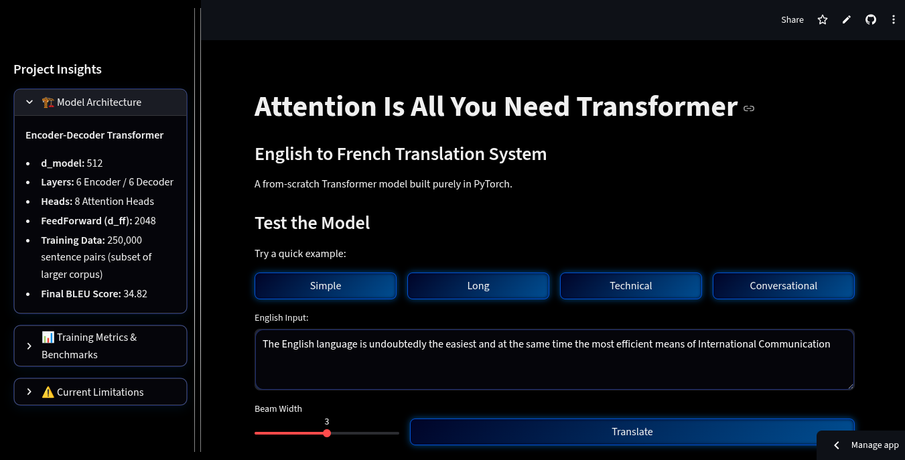
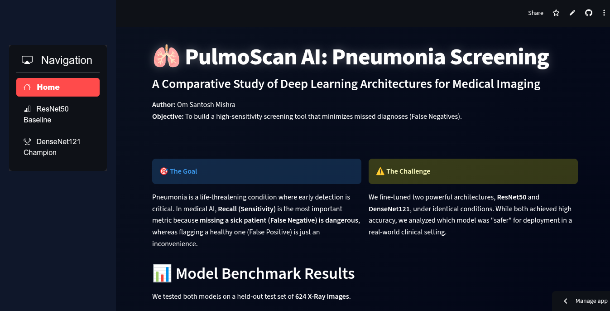
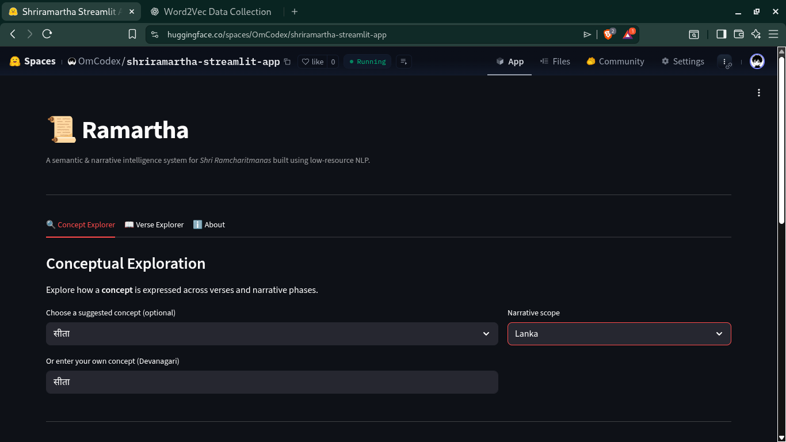
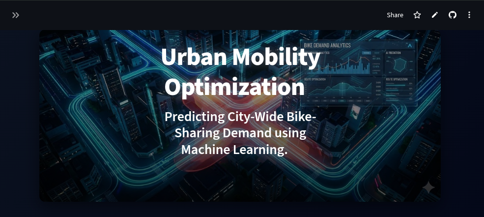
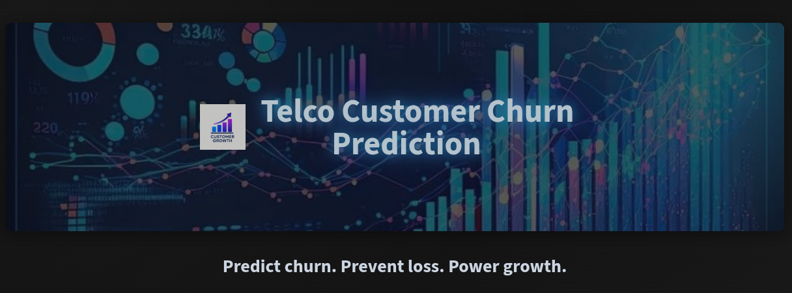

01

2.3M
translation pairs
34.82
BLEU score
99.7%
recall reported
5+
deployed ML systems
I'm Om Santosh Mishra, an inquisitive BSc.IT student at Smt. C.H.M. College focused on Machine Learning, Deep Learning, and NLP. I enjoy understanding how models work beneath the abstractions, not just using libraries and APIs.
I build by learning through implementation: from classical machine learning and computer vision to implementing Transformer architectures from scratch in PyTorch. My work involves training models, debugging failures, evaluating them properly, and turning working systems into usable applications.
Analyzing complex datasets to extract actionable insights and drive informed strategic decisions.
Python, SQL, Pandas, NumPy, Scikit-learn, and PyTorch.
Designing neural network architectures (CNNs, ANNs) and building Transformers from scratch and fine tuning them.
Transforming predictive models into interactive, user-friendly web applications and dashboards using Streamlit and HuggingFace.
The same stack from my existing portfolio, presented as a living system.
Scikit-learn · XGBoost / LightGBM · Feature Engineering & Evaluation · SHAP & Model Interpretability
PyTorch · CNNs & Neural Networks · Transfer Learning · Training & Optimization
Tokenization & Sequence Modeling · Attention Mechanisms · Encoder-Decoder Transformers · NLP & LLM Fundamentals
Python & SQL · Streamlit & FastAPI · Git & GitHub · Docker & Practical Deployment
Completed a hands-on Machine Learning Internship focused on real-world search and content data, working through end-to-end workflows including data exploration, feature engineering, preprocessing, model development, and evaluation.
Developed a Search Intelligence capstone to identify pages at risk of declining search visibility using 90-day content and search signals. Built a ranking system with client-grouped validation, achieving 75% Precision@20 versus a 45% baseline, and converted predictions into ranked recommendations with interpretable reason codes and an actionable content playbook.



Semantic Analysis Application
End-to-end NLP system for semantic analysis of low-resource classical texts using Word2Vec and FastText. Features Unicode-native processing and real-time concept exploration.


A minimal dashboard inspired by the reference: traffic, page views and a time-series view in the same dark visual language.
Local mode: counts are stored in this browser with localStorage. They do not represent global traffic unless connected to a server-side analytics provider.
Open source
A live snapshot of the code behind the portfolio — repositories, activity, and the systems I keep building.
Contribution activity
Loading GitHub activity…
Selected repositories
Loading…Notes and engineering write-ups on AI, Data, and the systems I build.
I'm open to ML / AI internships, research-oriented work, and collaborations where I can contribute to real systems and keep learning from strong engineers.
What you do makes a difference, and you have to decide what kind of difference you want to make.
Usually best reached by email or LinkedIn.